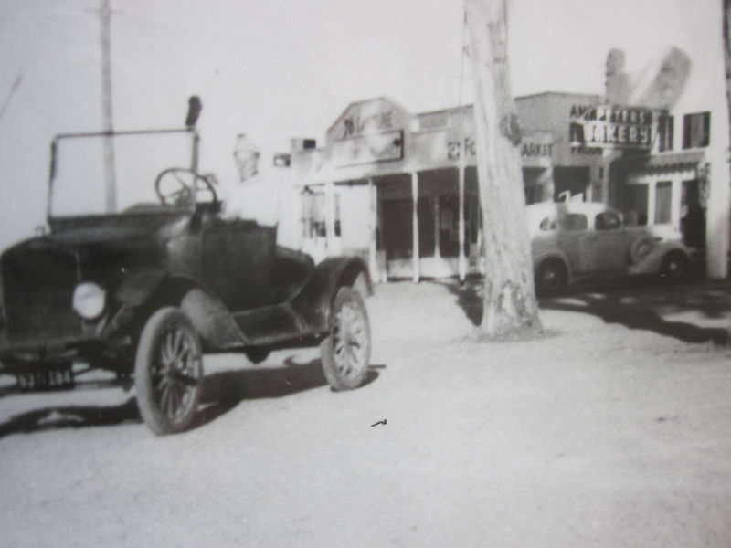
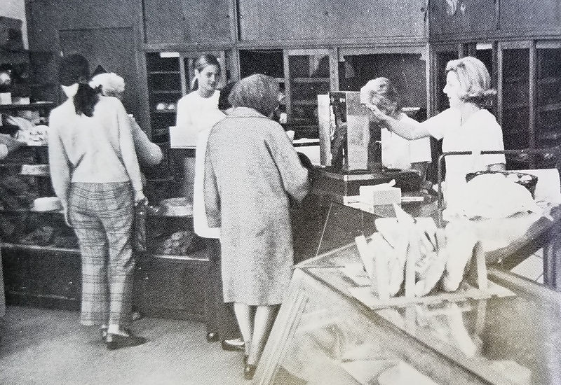

The Story of Peters' Bakery
When you walk into Peters’ Bakery, you’re not just picking up a cake—you’re stepping into a living piece of San Jose history.
Tony Peters: The Master Baker & Horseman
Tony was born in 1907 to a humble family on a ranch in Berryessa. His father was born right here in the valley in the 1860s. When Tony began school, he couldn’t speak a word of English. But he learned quickly—especially the language of hard work.
During the Great Depression, he spent his weekdays working for Studebaker, and every weekend, he’d take the train to San Francisco, learning the craft of baking at his uncle’s shop. That’s where he fell in love with the quiet discipline of dough, the artistry of pie crusts, and the joy of creating something from nothing.
“If you don’t want to eat it yourself, don’t sell it.”
— Tony's Golden Rule
A Fixture in the East Side Community
Tony wasn’t just a baker. He was a rancher, a horseman, a family man, and a community pillar.

Horseman & President
Tony served as President of the Santa Clara County Horsemen’s Association, where he helped organize community events, led trail rides, and brought people together over shared passions—whether it was horses or home-baked pies. If there was a barbecue pit to build or a birthday dance to plan, Tony was right there with a shovel in one hand and a smile in the other.

The Team & The 1974 Heroics
Tony trained over 100 bakers in his lifetime, many of whom opened bakeries of their own. In 1974, at age 66, he made headlines when he helped foil an armed robbery—wrestling a shotgun-wielding bandit to the ground with the help of his crew. A few pastries may have been lost in the scuffle, but the shop still opened right on time!
Timeline of a Silicon Valley Legend
Born in Berryessa
Tony is born on a local ranch. He grows up immersed in the fertile orchards of the Santa Clara Valley, learning the quiet virtue of honest hard work.
The Weekend Train to SF
During the Great Depression, Tony balances work at Studebaker with weekend trips to his uncle's bakery in San Francisco, mastering European pastry craft.
First Bakery Opened
Tony officially opens the original Peters’ Bakery at Delmas and San Carlos Streets in downtown San Jose. Two years later, a second branch opens on Alum Rock Avenue.
Permanent Home on Alum Rock
Tony builds the iconic bakery building on 3108 Alum Rock Ave across from his 20-acre horse pasture. The downtown shop is sold to apprentice Richard Sota (Dick’s Bakery).
Armed Robbery Showdown
At age 66, Tony and his bakery crew wrestle an armed shotgun robber to the floor. The pastries suffered minor casualties, but the bakery opened on schedule.
Third Generation Legacy
Tony passed away in 1996, but today Peters’ Bakery is still owned and operated by two of Tony’s grandchildren. Silicon Valley's oldest family-owned bakery keeps the exact original recipes rising fresh every morning.
"So come on in. Share a story. Take home a slice of burnt almond cake. You’re not just stepping into a bakery—you’re becoming part of a story that began nearly a century ago and still rises fresh every morning."